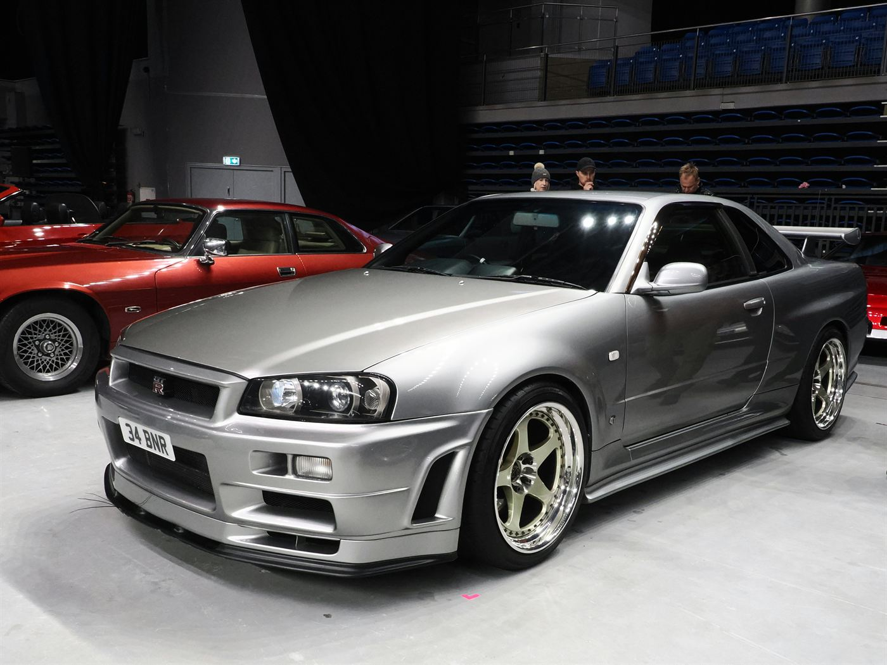
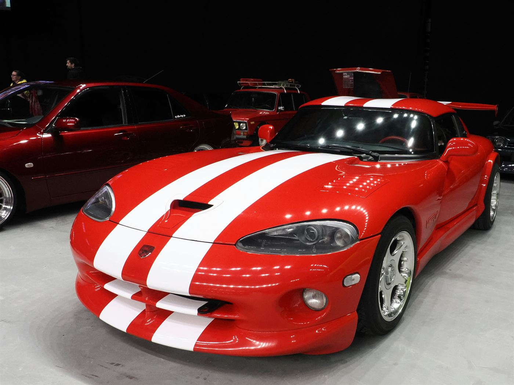
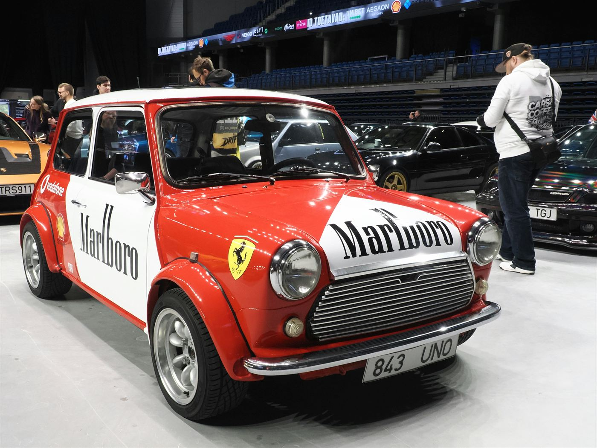
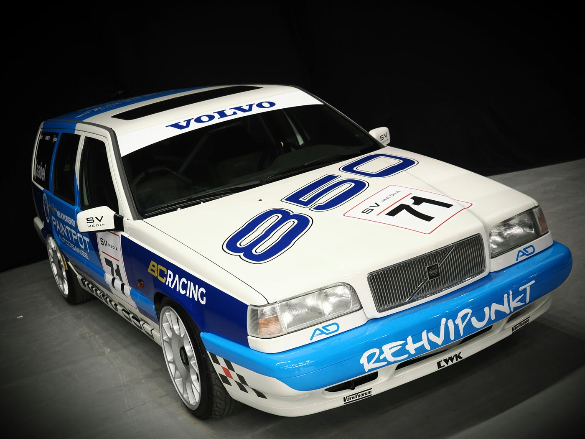

autode pildistaja · garaaž · Tallinn
Jaak
Aibast.
Pildistan autosid, mis on kas liiga kiired, liiga roosad või liiga haruldased. Siia olen kogunud oma lemmikud — roosast BMW-st kuni Nissan Skyline'ini.
Vaata garaažigaraažis
- lemmik roosa BMW E36
- unistus Nissan Skyline R34
- valjem Dodge Viper GTS
- kogus 88 pilti
viimati uuendatud: november 2026
veel pilte
garaažist
Kogu kollektsioon







Iga auto on lugu. Mõnel on lihtsalt valjem mootor.
minu garaažist
viimane projekt
Mallide galerii
Kooliprojekt, kus panin kokku kümme valmis veebilehe kujundust ja panin need Raspberry Pi peal tööle.
Vaata projektikirjuta mulle
jaak@example.comVastan tavaliselt ühe päeva jooksul. Kui ei vasta, siis ilmselt olen jälle autot pildistamas.
asukoht
Tallinn,
Eesti
GMT+2 · vahel ka Tartu
88
pilti, mille Jaak Aibast andis ühiskasutuseks.